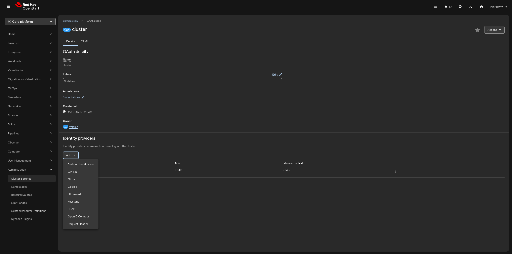

The user management
The User Management is the OpenShift Container Platform web console interface that allows cluster administrators to manage the users and groups of the cluster. Go to Home → Security → User Management to access the user management.
In OpenShift, the User Management section of the web console serves as the administrative bridge between your external corporate directory and the internal Kubernetes RBAC (Role-Based Access Control). Having these tools embedded directly in the console—rather than relying solely on the CLI—offers several "high-velocity" advantages for cluster administrators.
Simplified Identity Provider (IdP) onboarding
Go to Administration → Cluster Settings → Configuration → OAuth
In Identity Providers click Add to show the available options
Instead of manually crafting complex Custom Resource (CR) YAML files, the console provides a wizard-driven interface to connect your cluster to external identity sources like LDAP, GitHub, or Google.
Advantage: You can configure, test, and troubleshoot your connection to an IdP (Identity Provider) in minutes. The UI validates your parameters (like URLs and Secret names) before you apply them, reducing the risk of locking yourself out of the cluster.

Powerful user impersonation for debugging
You can click on a specific user in the User Management → Users list and select Impersonate User.
Advantage: This allows an admin to see exactly what a specific developer sees. If a developer complains they "can’t see the monitoring tab," you can impersonate them to verify if your RBAC policies are actually working as intended without needing their password.
Visual RBAC Mapping
Understanding who has access to what in a large cluster with hundreds of namespaces is notoriously difficult. The OpenShift console provides a clear, searchable table of RoleBindings and ClusterRoleBindings.
Advantage: You can instantly see which users are "Cluster Admins" versus "Project Viewers." It also makes it easy to spot "orphaned" permissions—where a user has been deleted from your company’s LDAP but their internal OpenShift User object or RoleBinding still exists.
Group Management & LDAP Sync Visibility
Managing users individually is a nightmare. OpenShift relies on Groups to scale permissions.
Advantage: The console allows you to manually create local groups for quick projects or, more importantly, monitor the status of your LDAP Group Sync. If a sync fails, the console’s event stream will highlight the specific error (e.g., "invalid credentials" or "search base not found"), allowing for much faster resolution than digging through logs in the openshift-authentication namespace.